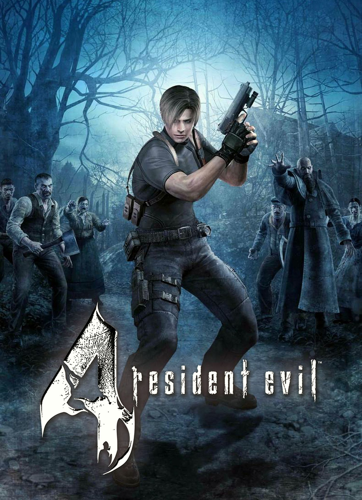

The actual definition of Virtual Reality is the use of computer technology to create a simulated environment. As the digitalization extended Virtual Reality gained significant ground in every sphere like Business, Gaming, Education and much more. People used to think that VR is only for the gaming industry; that was true in like the 2018’s but now the definition of VR isn’t just gaming.
VR is trending in the gaming industries that have benefitted from this immersive technology. Many large-scale game development companies have jumped onto the VR movement to transform the user’s experience from normal to excellent. This innovation in the game industry is flourishing at great speed. From the past few years, the Virtual Reality gaming industry has played a significant role. VR gave a new twist to the video game business. Some really popular games like Beat Saber, Resident Evil 4, Blood and Truth etc. have gained a lot of interest from gamers all over the world.

VR has enhanced the gaming industry and by many ways a few examples are given bellow:
1. Enhanced user engagement:
They look more appealing for avid players and occasional gamers with an immersive experience. VR players get more involved as they are equipped with a number of tools, including hand controllers and a headset at their disposal, compared to engaging with the flat-screen games.
2. Cutting-edge capabilities that enrich the game environment:
The release of controllers has become a turning point in building the player interaction in VR surroundings. Now players can control the game environment at their own will. Also, in the near future, we can anticipate virtual reality technology to evolve from mere strapping on a headset for a visual encounter to introducing truly immersive experiences that incorporate every human sense.
3. Expanded content:
VR technology is a new boosting factor in creating gaming content. Genres like shooters, adventures and simulations have changed thanks to VR.
According to Statista(a German website on statistics), in 2020, adventure and racing games are the most popular VR gaming genres. 48 percent of users said they were interested in VR racing games, while 73 percent felt the same way about adventure VR games.
Now let’s take a close look at the types of VR games that exist.
Types of VR games
As a new medium, virtual reality is transforming the way we imagine the space in the game to actually being in there.
First-person VR shooter games
They are the most popular genre of VR games. Players feel everything that is happening on the playing field, including the visual and special sound effects. Reloading guns, nature sounds, flying bullets, storms, other players’ speech, strokes, steps, falls, traffic, etc., they all feel real. The only issue for the shooters’ games that remains is lacking the freedom of movement.
VR racing games
VR racing games are different from the previous type since players are not restricted in movement. VR racing games are typically based on cutting-edge graphics.
Horror games
They are also one of the most popular game genres. The graphics are so realistic, so it more interesting and horrifying than looking at a flat screen. All the jump scares and the dark and cold atmosphere will be seen and felt by the user.
VR adventure games
While more hectic action games can make some players queasy, virtual reality is perfectly suited to a more leisurely pace of exploration and puzzle-solving through the adventure genre.
City-building games
The city-building games use the exciting possibilities of virtual reality to further enhance the classic city building game with entirely new game play experiences and interactive mechanics.
Office work will also have a drastic change in 2050 one reason is that we already experiencing work from home and we know that once humans find something we keep on expanding it. It is the natural tendency of humans and another reason is that it will be easier for offices in different countries can communicate easily. Even thought we have apps like Zoom but it will be like they are there. And that leads to the first point of the ways Virtual Reality will change office work.
1. Increased Connection and Collaboration
Virtual reality allows people to come together and collaborate regardless of physical distance. However, unlike with video conferencing, VR users feel like they are inhibiting the same space- resulting in more effective collaboration. VR also provides the platform for users to view and manipulate data together in real time. While some companies choose to install mixed-reality rooms to conduct VR meetings and collaborative work sessions, others simply distribute VR headsets that can be used while in the office or remote. The technology is easily accessible and intuitive, helping people across the world connect and collaborate.
2. New HR Practices
With access to workers across the world, hiring practices will expand to make sure that top talent is being recruited. As part of the interview process, prospective employees will have the chance to virtually shadow their potential position to get a real sense of the day-to-day responsibilities. VR can also be used for a variety of interactive HR workshops. The NFL currently uses VR in their diversity training, allowing their people to experience the prejudice and harassment that can occur in the workplace- a process they find far more effective than simply outlining company regulations.
3. Upgraded Training Techniques
The ability to put people into fully immersive real-life scenarios creates the perfect training tool. VR training is especially beneficial in high-risk situations, as it allows employees to gain experience safely. Both NASA and the armed forces currently use VR training- minimizing risk and costs. Even Walmart has taken advantage of the technology, using simulations to train employees for Black Friday madness. Regardless of the industry, VR offers the opportunity for an engaging, educational experience.
4. More Efficient Product Development
Within a computer-generated environment, product development will become more efficient than ever. Virtual reality can be used to test products in a variety of scenarios, eliminating the need for expensive physical prototypes. During trials, changes to a product can be made virtually and tested immediately, allowing the final product to be refined faster than ever. Large scale manufacturers are already using VR to test everything from spacecrafts to cars: Ford uses the Oculus Rift, a popular VR headset commonly used by consumers for gaming, to create and refine virtual prototypes. The company’s senior technical leader Jeff Greenberg notes “The impact on cost, time and quality are significant, and have allowed our designers and engineers more creative freedoms to explore options that in the past would have been to time- or cost-intensive to consider.”
5. Innovative Marketing Practices
Virtual reality gives the old fashion test drive a whole new meaning. From cars to vacations, VR creates the opportunity to try nearly every product and experience on the market before making a purchase. And when consumers are ready to make that purchase, they’ll be able to do it virtually. In 2016, Macy’s hosted a virtual shopping experience that allowed shoppers in China to browse and purchase from their flagship store in New York City. The immersive experience that VR provides is impactful and memorable, creating a personal connection between brands and consumers which can influence purchasing decisions.
Now not only gaming and office work will change other feilds will also adopt the Virtual Reality world. Like millitary, education, fashion and much, much more. There are many feild but here are some examples:
Education
If Virtual Reality (VR) can be used to teach students it would not only provide students with memorable and immersive experiences but be easier to learn. Which way we are learning right now is one was learning but then it will be two way learning because they see and also hear at the same time. This way students will be more curious because they are interacting with their surroundings. This method of VR also helps students who suffer from autism and many other disadvantaged children. It helps them to learn new skills. Imagining a new world where children want to go to school and are happy to go. A world where children can communicate easily. This can also help many students from a higher grade or the ones in collage. One example is medical students. Virtual reality can be used to practice how to do some specific work; it will help the students to visualize how to do it better. Teachers can even tell where the students are going wrong with ease. Medical and dental students have begun using VR to practice surgeries and procedures. Virtual patients are used too so, students can develop skills that can later be applied in the real world.
Tourism
Tourist can understand the things about a monument and other places better. It is like in reality, u are visiting the places and realising and feeling the aroma of the place. They can visit their favourite destination ,when they visit the particular place ,they can get important and interesting facts about the place by tour guide , they also tell you history of the place , who build it and etc. Green technology is to travel business. Even your friends can join by a Virtual view. Tourists could get a tour. They can experience each part of the place. Feel it in the air.
Fashion
Earlier, fashion was important but not as important as it is now. Nowadays it is really important and every one thinks of it. To make it easier for users to buy clothes. Virtual reality is used to go to the mall and buy the clothes you want, there is the function to touch the fabric and see the process. We can feel the experience of buying and allowing customers to try on virtually and yet enjoy like you are there at that very moment.
Sports
Virtual reality is making sports more interesting. Sports is very important for our health and fitness and when you are not in an area where you can esaily get access to a gym or a trainer then VR come in handy. Virtual reality can be used by coaches and players to train more efficiently across a range of sports, as they can watch and experience certain situations repeatedly and can improve each time. Even Coaches can see what’s wrong and teach properly. The audience can also experience these moments with their friends and family, they can cheer for their favourite player.
Courtrooms
Virtual reality is used in courts and cases too it has made the judge´s decision a little easier. They use VR´s to identify photos int the form of 3d shapes which is much more understandable, 3d could give them more complete and most accurate information so the judge´s can make the correct decision. It would catch the culprit of the particular case more early. To make is even more easier headsets can be used hear clearly.
Military
For years military forces have different ways for the people to understand and learn how to be a soldier but now we can use technology to make real life situations for soldiers to go through. By using VR they can understand and visualise the base and attack accordingly. It can be used to train soldiers more efficiently. VR headsets provide a vital training element by capturing the full attention of trainees so the lessons and skills they learn are easily understandable.
Automotive manufacturing
Automotive manufacturing is getting larger and larger these days. Different versions of things are being made, for that a lot of money is spent on research done by people and the development of the product. VR´s are also used to make automotive manufacturing and making the things easy and interesting. It is used in many ways like to express the designs attractively and accurately to their buyers. There would be so many projections that Virtual Reality allows for companies to test new designs in various scenarios and get a feel of the performance of their product.